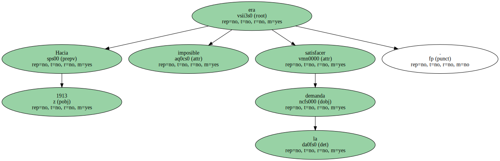

En 1903 fundó su primera compañía con doce socios.
En quince meses produjo 1.700 modelos A y en los cinco años siguientes recorrieron todo el alfabeto de la B a la S , para mejorarlo.
De toda la serie sacó Ford la experiencia de su vida : la gente prefería autos sólidos y baratos.

El Modelo sería el resultado de esa experiencia , un coche del que , de 1908 a 1928 , se vendieron 15.800.000 , récord del siglo hasta la llegada del escarabajo de Volkswagen.
Hacia 1913 era imposible satisfacer la demanda.
Nuevamente se vio a prueba la inventiva de Henry Ford , en cuya filosofía no entraba el subir los precios.
Muy al contrario : decidió ensayar los métodos de organización del trabajo , muy en boga merced a F. W. Taylor.
Había nacido la producción en serie , una de las ideas decisivas del siglo XX.

- Yo voy a democratizar el automóvil - decía Ford - y cuando lo haga todo el mundo podrá comprar uno y casi todo el mundo tendrá uno.
- Y acto seguido anunció que doblaría a cinco dólares el salario mínimo de sus obreros y empleados : si sus obreros ganaban más dinero , podrían comprar sus autos.
Esta filosofía recibió el nombre de fordismo y durante algún tiempo hizo de su fundador el dolor de los obreros.
La compañía Ford se extendió por todo el mundo y sirvió de modelo a las empresas de coches.
Henry Ford , por su parte , quiso dedicarse a la política , hizo alardes de antisionismo y experimentó amargos fracasos en su afán de romper por la violencia la sindicación de sus obreros.
Como tantos hitos industriales del siglo , el automóvil hizo pagar su precio a la sociedad.